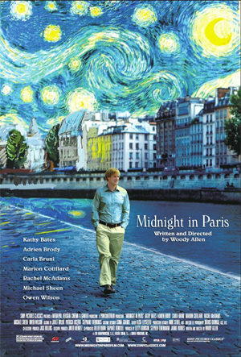

Gil and Inez travel to Paris as a tag-along vacation on her parents' business trip. Gil is a successful Hollywood writer but is struggling on his first novel. He falls in love with the city and thinks they should move there after they get married, but Inez does not share his romantic notions of the city or the idea that the 1920s was the golden age. When Inez goes off dancing with her friends, Gil takes a walk at midnight and discovers what could be the ultimate source of inspiration for writing. Gil's daily walks at midnight in Paris could take him closer to the heart of the city but further from the woman he's about to marry.
